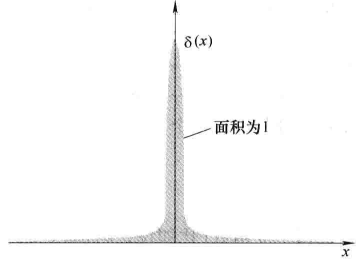

技术上，\(\delta(x)\)并不是一个函数，因为其在\(x=0\)处的值不是有限的，数学文献中将其称为推广函数或广义函数.
性质1：
一维狄拉克函数为一个面积为1，无限高且无限窄的尖峰.

即：
$$\int_{-\infty}^{+\infty}\delta(x)\mathrm{d}x = 1$$性质2：
$$f(x)\delta(x) = f(0)\delta(x)$$推广
$$\delta(x-a) = \begin{cases}0,\quad x\neq a\\\infty,\quad x=a\end{cases}$$ $$\int_{-\infty}^{+\infty}\delta(x-a)\mathrm{d}x = 1$$ $$f(x)\delta(x-a) = f(a)\delta(x-a)$$ $$\int_{-\infty}^{+\infty}f(x)\delta(x-a)\mathrm{d}x = f(a)$$\(\delta^3(\boldsymbol{r})\)在\((0,0,0)\)处无穷大，在其他处为0.
性质2：\(\delta^3(\boldsymbol{r})\)体积分为1：
$$\int_V\delta^3(\boldsymbol{r})\mathrm{d}\tau = \int_{-\infty}^{+\infty}\int_{-\infty}^{+\infty}\int_{-\infty}^{+\infty}\delta(x)\delta(y)\delta(z)\mathrm{d}x\mathrm{d}y\mathrm{d}z = 1$$ 性质3： $$\int_Vf(\boldsymbol{r})\delta^3(\boldsymbol{r}-\boldsymbol{a})\mathrm{d}\tau = f(\boldsymbol{a})$$利用球坐标的散度公式，计算可得：
$$\nabla\cdot(\frac{\hat{\boldsymbol{r}}}{r^2}) = \frac{1}{r^2}\frac{\partial}{\partial r}(r^2\cdot\frac{1}{r^2}) = 0$$实际上：
$$\nabla\cdot(\frac{\hat{\boldsymbol{r}}}{r^2}) = 4\pi\delta^3(\boldsymbol{r})$$